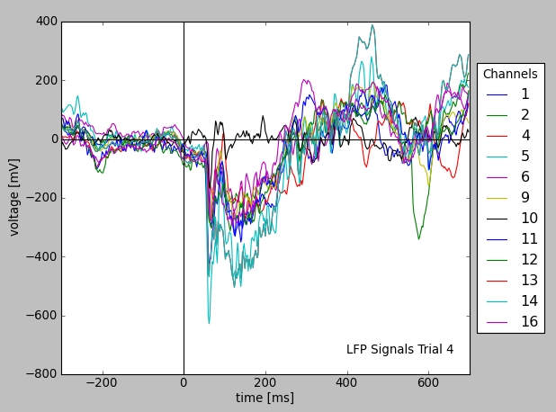

The aim of the GNData is to provide a platform for Neuroscientists for data storage, analysis and exchange. It was designed to support normal experimental workflow, so you may use it from your familiar analytical environment, like Matlab or Python.
Below we provide several use case examples of the GNData platform with application to real experimental data. For practial illustration we use G-Node client libraries for Matlab and Python to show data management operations directly within the computational framework. Additionally, we provide a short description on web browser access for overview purposes. For proper operation a server part should be available. A demo environment is provided by the G-Node at test.g-node.org, which can be accessed for testing or introductory purposes without user account registration (user and password “demo”).
In the following examples, we consider a typical experimental study in which responses from neurons in the visual cortex of macaque monkeys are recorded (Teichert et al., 2007). These examples assume a dataset containing neural responses recorded with an array of electrodes that is pre-loaded on the demo server.
Start by logging with the user “demo” and password “demo to the test.g-node.org (web interface is in the Beta mode). The tree browser on the left prvides an overview of the Experiments, Data and certain experimental features (metadata like Stimulus etc.). In the middle panel one can browse metadata properties and values.
To get the Data overview, one can select “All Data” in the metadata browser (tree on the left), then select the AnalogSignal in the drop down box in the search panel (middle top), and click search (also select the “Data” tab below if needed). This should provide a list of uploaded example LFP data. One can select one or several of the signals from the list by hovering over and clicking a “tick” button. The selected signals will appear in the “Selected Data” panel (bottom right). These can be plotted with the “Plot Selection” button below. Certain regions can be zoomed in on the plot.
We recommend a combination of a web browser with a REST client as a framework to execute HTTP requests (for example, Google Chrome with Postman). Alternatively, HTTP requests can be also executed directly from the web browser’s address bar but with the loss of human-readable response formatting.
Authentication for the demo user is done with the following POST request:
POST /account/authenticate/
{
"username": "demo",
"password": "demo"
}
The browser saves authentication and session information automatically, allowing to execute further API requests.
As a short example, the following HTTP request selects all experimental trials created on November, 11th that have ‘saccade’ in their name.
GET /electrophysiology/segment/?date_created__month=11&date_created__day=9&name__icontains=saccade
Further requests can be executed according to the API documentation or the examples presented in this overview.
The Matlab library is a free package accessible at the G-Node Github repository. Installation instructions and package documentation are available at the project wiki page.
To start using the library it is necessary to import the “gnode” functions into the current scope and initialize a session:
% move all library functions into scope
import gnode.*;
% initialize session as user "demo" with password "demo"
g = init('demo', 'demo', 'test.g-node.org');
Data at GNData is stored in a set of object types tailored to electrophysiology, such as blocks, segments, recording channels, signals etc. In the Matlab environment, these objects are represented as structures. Here is a basic example for creating and uploading such an object.
% create a structure containing signal data
signal = make_dummy(g, 'analogsignal');
signal.name = 'New signal';
signal.sampling_rate = struct('units', 'Hz', 'data', 12000);
signal.t_start = struct('units', 'ms', 'data', 0);
signal.signal = struct('units', 'mV', 'data', [3.45, 1.34, 1.45, 4.22]);
% creates object on the server and returns its unique ID
new_object = create(g, signal);
Object retrieval is equally straightforward and supports various access methods (e.g. by object type, by array of IDs, using filters or a numeric range). Here is an example that requests all time segments representing experimental trials that were created on November, 11th and have ‘saccade’ in their name:
% query LFP data using filters
filter1 = {'date_created__month', '11'};
filter2 = {'date_created__day', '9'};
filter3 = {'name__icontains', 'saccade'};
segments = browse_search(g, 'segment', filter1{:}, filter2{:}, filter3{:});
The following example downloads one of the time segments with all related analog signal and spike time data:
segment_with_data = get_cascade(g, segments{1})
More advanced operations (e.g., updates, download queues, batch object creation and upload, and so on) are described in the reference.
The Python library is a free package accessible at the G-Node Github repository as well as at the standard python package repository. Installation instructions are contained in the attached documentation as well as online at the project documentation page.
To start using the library it is necessary to import the session class and initialize a session:
# import core session class and model descriptions
from gnodeclient import session, Model
# Initialize session as user "demo" with password "demo"
g = session.create(username="demo", password="demo", location="http://test.g-node.org")
A session object provides the main interface to work with data and metadata. Like with the Matlab library example above, we demonstrate how to select a certain experimental trial using several criteria. In particular, the following script requests all time segments representing experimental trials that were created on November, 11th and have ‘saccade’ in their name.
filters = {
'date_created__month': 11,
'date_created__day': 9,
'name__icontains': 'saccade'
}
time_segments = g.select(Model.SEGMENT, filters)
This results in a number of experimental trials, saved on that day. The Neo data model assumes that time segments contain analog signal or event type data. For illustration, the script below plots all LFP traces from the first trial of the selection.
# take a first segment from the selection
lfp_data = time_segments[0].analogsignals
# plot LFP data from a certain trial (downloaded data is cached)
from matplotlib import pylab as pl
lfp = pl.subplot(111)
for s in lfp_data:
lfp.plot(s.times, s, label=s.recordingchannel.index)
s1 = lfp_data[0] # one of the signals
pl.xlabel("time [%s]" % s1.times.units.dimensionality.string) # set X units
pl.ylabel("voltage [%s]" % s1.units.dimensionality.string) # set Y units
# [...] # commands for axes and legend omitted
pl.show()
Further examples as well as the full library reference are available at the project documentation page.
